Just Beginning?
Learn How To...
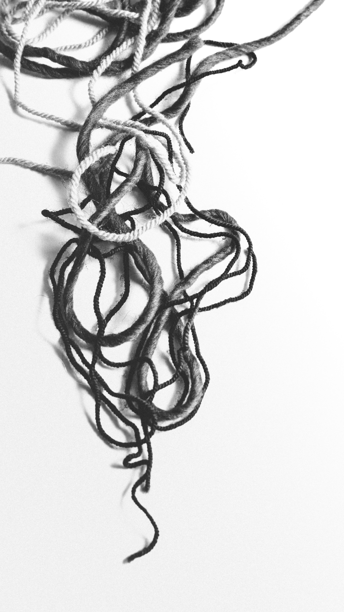
About Me...
I started learning to crochet when I was about 10. The first things I made that were beyond a simple chain, were a small drawstring bag, and another even smaller drawstring bag. I proudly paraded my original creations out to the lounge with the goal of getting mum's admiration. Much to my embarrassment, my work was snatched away by mum's partner of the time, and one of his friends, who pronounced my work to be "willy warmers" and they then proceeded to argue over which one belonged to whom. Hilarious right? But at the time it really put me off. I didn't pick up crochet again until my early 20s. I was about 27 when I decided to learn to knit as well. There's always more I want to know!
My Latest Projects...
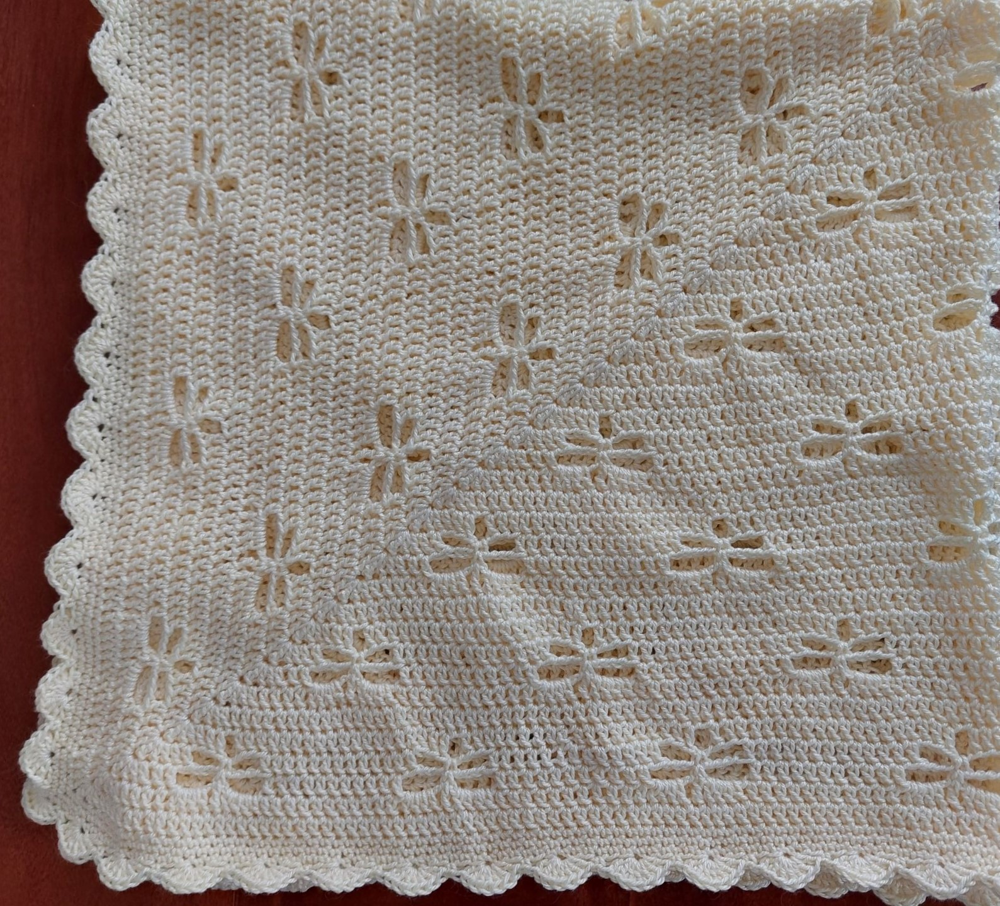
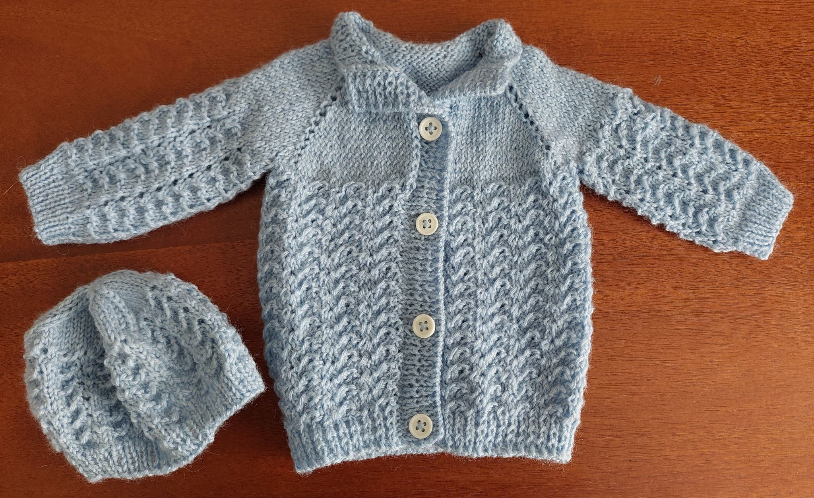
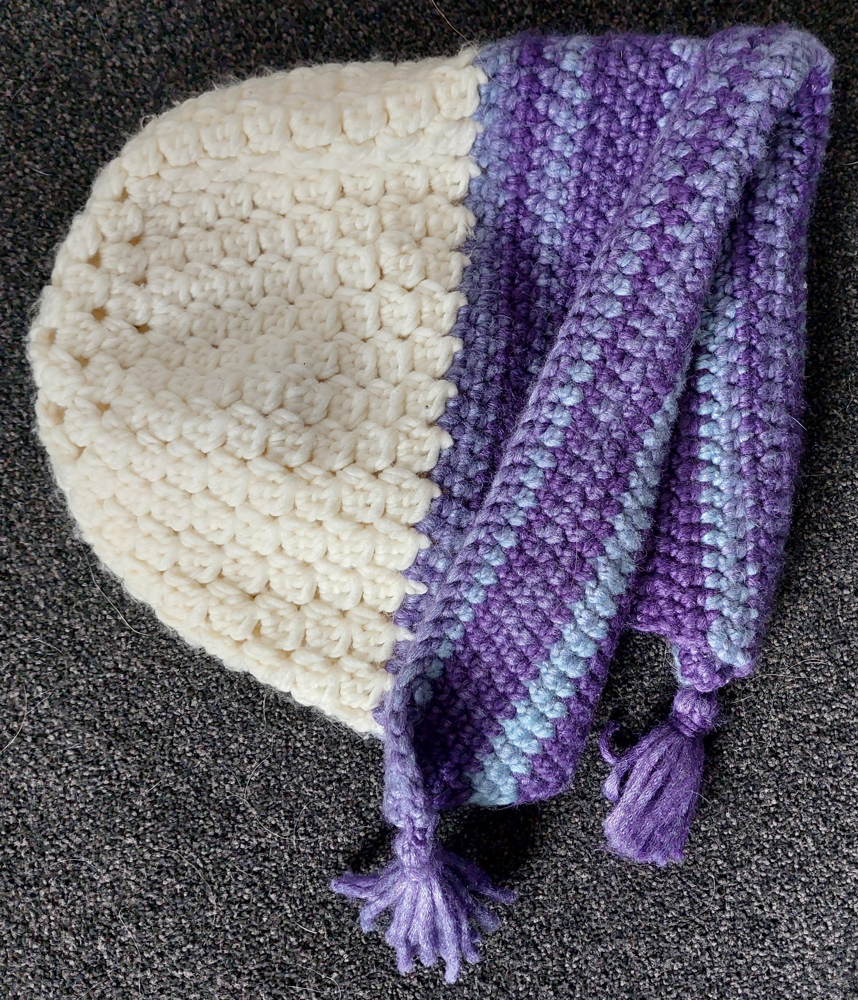

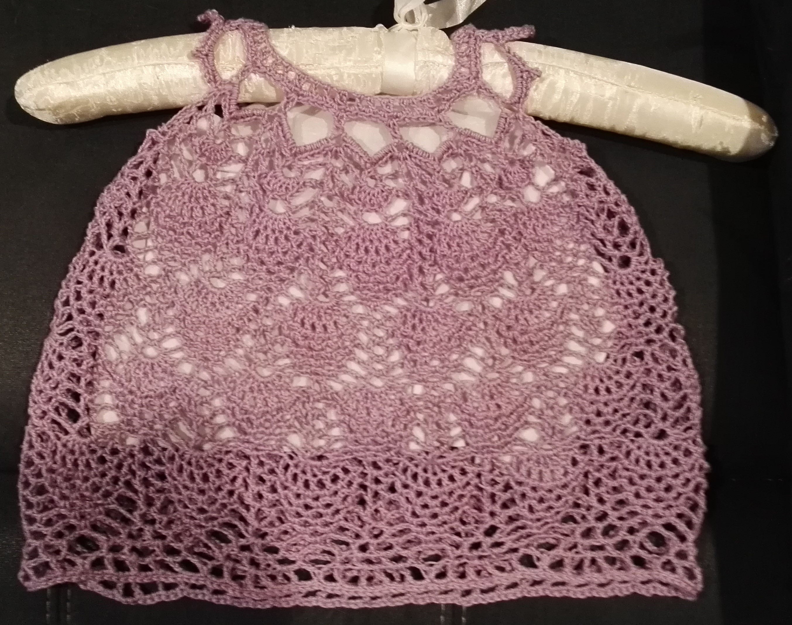
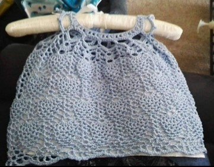
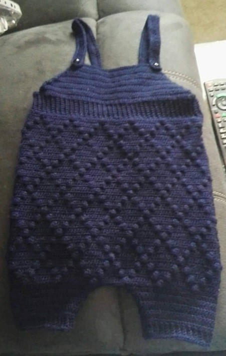
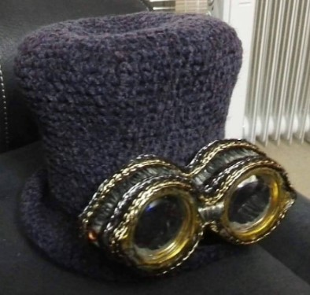
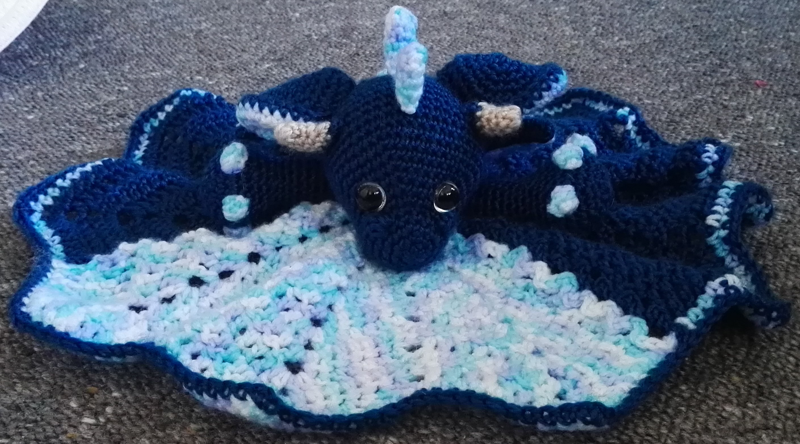


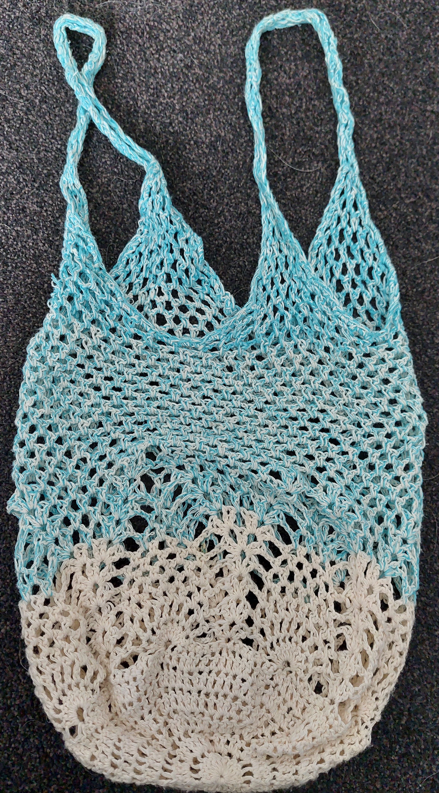
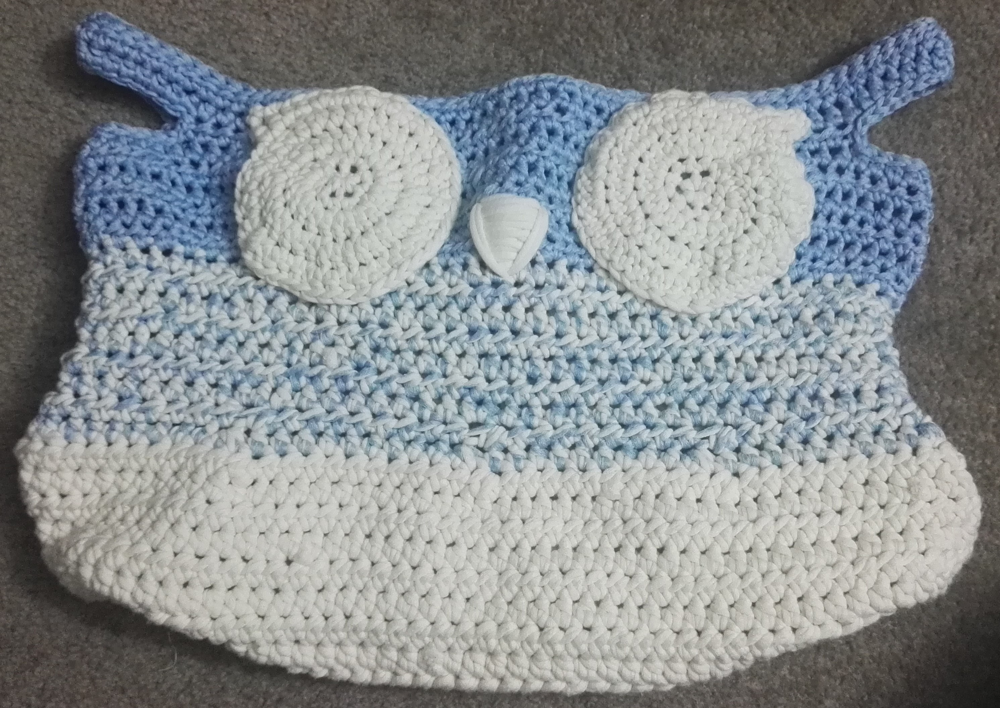


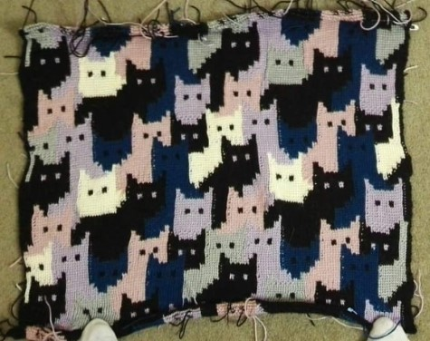